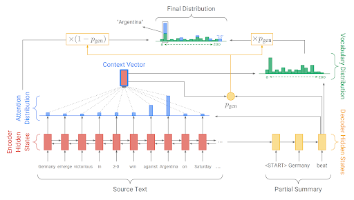
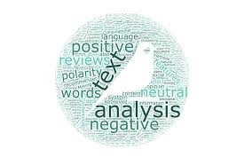
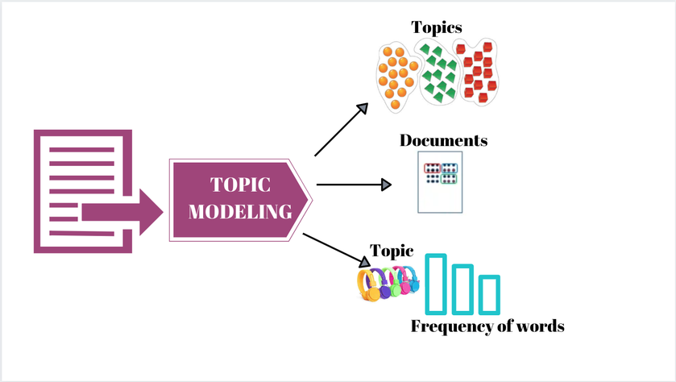

I'm an aspiring data professional
A New Approach to Evaluating Summarization Methods
- NLP
- Machine Learning
- Summarization

Summarization is meaningful because it simplifies long, complex pieces of text into shorter, more digestible documents. There are three main approaches to summarization - extractive (i.e. copying the most useful text directly from the main document), abstractive (i.e. generating new text that covers the most important parts of the main document), and hybrid models(i.e. copying and generating text). All of these methods are typically evaluated based on the ROUGE metric. This evaluation method is effective at telling us how much information from the original text is captured in the summary, however in this project I argue that it should not be the only metric that is considered because it fails to address whether or not the summary becomes less complex. I implement variations of the three different summarization methods - the TextRank extractive method, sequence2sequence abstractive method, and the state of the art pointer-generator approach for the hybrid approach, and evaluate them based on the Improvement in readability in addition to the ROUGE metric. Evaluating based on readability gives us a better idea of how effective the summary is by offering a measure of how much more comprehendible the summaries produced are. The pointer-generator model performed the best by achieving the highest ROUGE scores, as well as a meaningful decrease in complexity because of it’s architecture and ability to pull out a lot of the important text (e.g. what leads to the high ROUGE scores) as well it’s ability to generate new, less complex text (e.g. what leads to the decrease in text complexity).
AirBnB in NYC and the Effect on the Rental Market
- Data Visualization
- Data Manipulation
- Storytelling
[note: this project was completed before COVID-19] AirBnB has revolutionized travel and the tourism industry - especially in cities that draw a lot of tourists. Allowing tenants to rent out excess space they have allows them to generate income while also giving someone a place to stay - a seemingly win-win scenario that makes both parties better off, however there is potential adverse effects on the rental market that could be harming tenants more than they think. In this project, we examine the relationship between airBnBs and the rental market in New York City through a series of informative and interactive visualizations. We used data from 2008 to 2020 that was collected from airBnB and streeteasy. The series of visualizations lets the data tell an interesting story and gives users the opportunity to interact with the data themselves to better understand the impacts of airBnB in NYC.
Text Classification from Scratch
- NLP
- Machine Learning
- Text Classification

Text classification is a widely used method by NLP practitioners to determine if a given piece of text belongs to a certain category and I’d frequently used in tasks like sentiment analysis and spam detection. In this project, I code the näive bayes and logistic regression algorithms from scratch using Python to classify tweets as offensive or not offensive. The näive bayes algorithm classifies tweets by calculating the probability of the tweet being offensive given the tweet, as well as the probability of the tweet being not offensive given the tweet. Using this model I was able to achieve an accuracy of 79% correct classification. The logistic regression implementation uses a sigmoid activation function and gradient decent to learn a function to best approximate the output class given an input tweet. Using the logistic regression approach allowed me to achieve an accuracy of 82% correct classification. Coding both of these algorithms from scratch gave me a deep understanding of both approaches and a better understanding of how to correctly turn algorithms into code.
Web Scraping and Databases
- Web Scraping
- SQL
- Relational Databases
- Flask

In college athletics, schools are commonly labeled as being either a “basketball” school or a “football” school based on which team usually performs better. This project uses a combination of web scraping, databases, Python, and Flask to create a resource for people that allows them to quickly access information about a school’s basketball and football team so that they can determine which sport they are better at. I began this project by crawling three different websites using the beautifulsoup4 package to collect data on 236 college’s basketball and football teams and crawled a total of webpages to collect all of the data. As I scraped the data, I populated a SQLite relational database that contains 5 tables. I used user inputs to generate SQL queries that would extract the relevant information to the users search term. I used Flask to give users an intuitive interface to create their queries and have the results displayed to them in an easy to read way.
Consulting Project
- Consulting
- Technology
- Data
In this project, I was a part of a group that was assigned to a small business in Ann Arbor, MI to help the owner make better use of their data and technology to increase revenue. We conducted 4 interviews with past customers and 2 meetings with the business owner to gather information that would help us make a recommendation on how they could implement to earn more revenue. We were also able to work with the data collected from business transactions and website traffic that we considered when constructing our implementation. After analyzing the data fromo our interviews and meetings, we noticed that the business was struggling to get repeat customers. Because of this, we chose to propose a recommendation that focused on this shortcoming. We suggested that the business owner implements a strict follow up to each transaction as well as an email newsletter so that they could stay in contact and remain engaged with their customers. We helped the business owner implement these recommendations by suggesting different technologies that they could leverage to ensure that this solution was easy to maintain.
Topic Modelling
- NLP
- Machine Learning
- Topic Modelling

Topic modeling is a way to discover the main topics/ideas that are present in a long pice of text. In this project I implement 3 different approaches of topic modeling applied to a dataset made up of random Wikipedia articles. The first approach I use is latent dirichlet allocation using Gibbs-sampling. The next two implementations I used were from the Gensim and Mallet libraries. After analyzing the topics resulting from each method, I came to the conclusion that the Mallet implementation was the best approach because it was the fastest and produced the most accurate topics based on my own judgement. Working with these three different approaches for topic modeling gave me a good amount of experience working with topic modeling that are easily transferable to different real world problems.